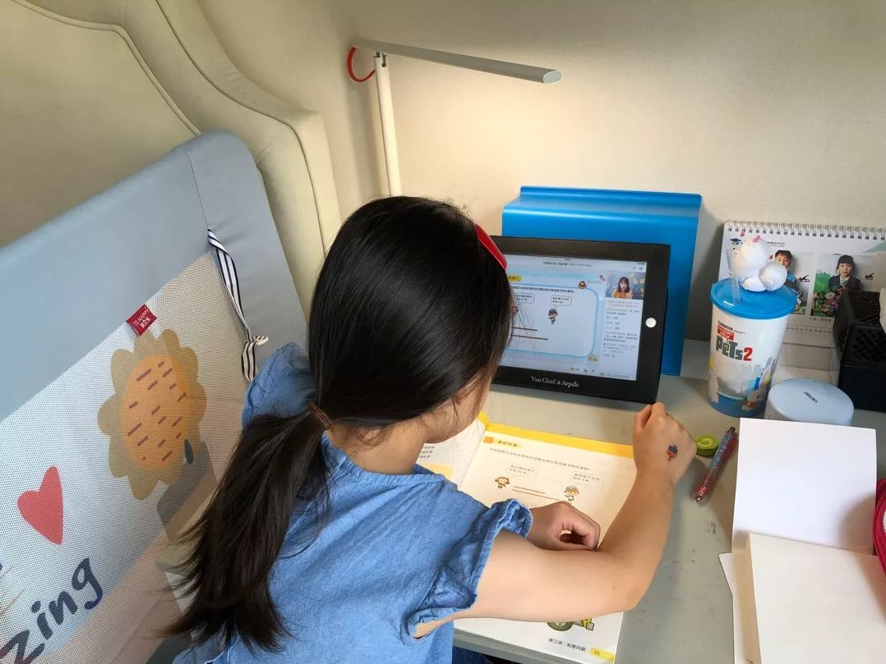
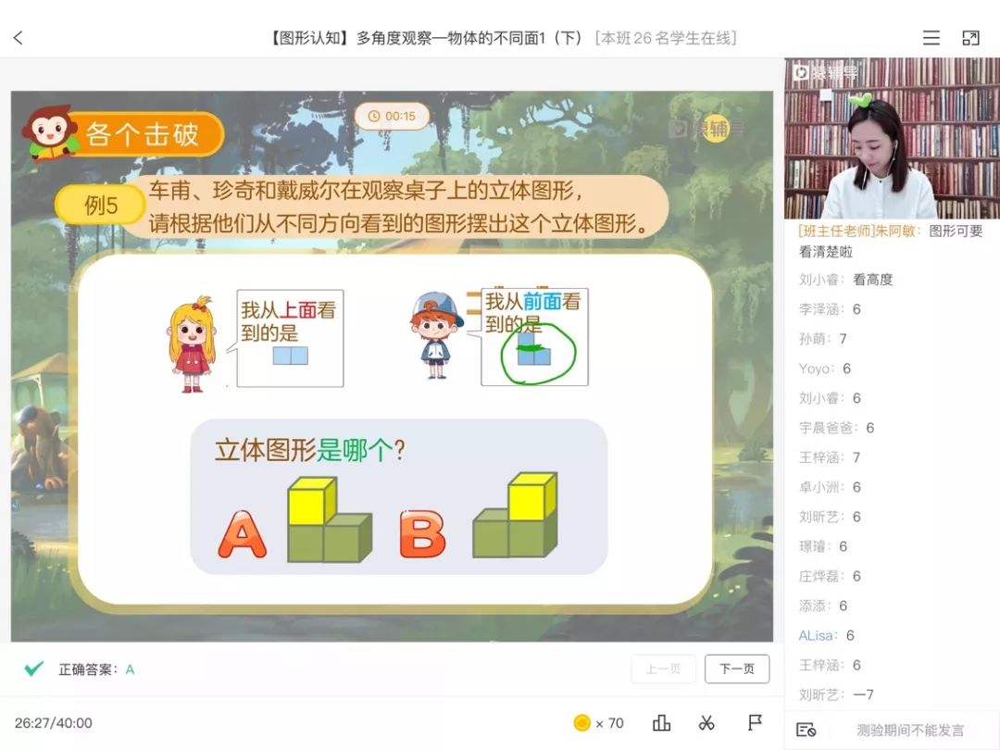

战疫进行时：“好好学习”在线上
原文链接 备份链接 全文共3557字，阅读大约需要7分钟。 “停课不停学”不等于上网课，上网课也不是简单的课堂转移。广义上的学习，是让孩子在生活痕迹中思考本质，借助互联网和信息化教学资源建立属于自己的精神天空。 教学形式的演进无法代表教育 …

为什么这次在线教育又火了？
“到了2020年，老师和学生都不用去学校了，在家里就能上课”。这是2000年梦想杯作文大赛特等奖节选中的一句话，没想到在二十年后的今天却由于新冠肺炎疫情影响而变成了现实。
近年来在线教育被社会各界寄予了厚望，也是教育领域长盛不衰的话题，但受制于各种原因，在线教育距离广泛普及还有一段路要走。疫情影响之下，这也是第一次，在线教育从“备选项”成为”刚需“，在更大范围内被认可和接受。
在线学习浪潮汹涌而来
为响应教育部疫情期间“停课不停学”的号召，2月10日，全国超过1亿中小学生在家上起了网课。这是中国互联网发展20年，首次出现学生的日常教学从线下转移到了线上的情况。
过去一周，全国31个省市自治区推迟了原先制定的开学时间。众多在线教育机构相继在全国推出免费或低价课程，线下教育机构和学校也将课堂搬到了线上。

据不完全统计，截至目前，已有新东方在线、学而思网校、猿辅导、作业帮、网易有道、跟谁学等超过20家在线教育企业向全国学生提供免费课程。
“开放免费直播课以来，短短不到十天时间，2000万中小学生报名领取课程，这是一个在线教育平台往往需要几年时间才能完成的用户积累。”猿辅导在线教育平台的一位相关负责人表示。
此前，根据艾媒咨询预测，2020年中国在线教育用户规模将达到2.96亿人。疫情期间用户对在线教育产品的集中尝试，将加速在线教育用户规模的扩张。一场全民在线学习潮正在掀起。
全民在线学习的背后
突然的线上教学，对习惯了线下授课的老师们是个不小的挑战：不仅要重新编写教案、制作PPT，还要学习直播平台的交互方式。陈宁是山西某高中的数学老师，回忆最近第一次上网课时的情形，他用”难度堪比再就业“来形容。
微博上网课“翻车现场”也比比皆是：生物老师上课被直播平台封号，政治老师上课忘记开麦……除此以外，网课的流畅度低、体验差等也遭到人们的频频吐槽。
这些“翻车现场”在让人哭笑不得之余，也再次引发了人们关于在线教育行业的价值探讨。
“此前一直习惯于线下教学，由于没有实操过，并不了解线上授课到底是什么”。陈宁依旧在忙碌地准备着课件，但在短短两天的试播课中，他通过不断尝试，经验总结，已经很快熟悉了网上教学的流程。“尽管是一个挑战，但网络教育一定是大势所趋。“陈宁说。
事实上，在线教育经历多年的发展，早已经有了相对成熟的运营模式，在在线1对1、小班课、双师制等模式的应用和尝试下，一些在线教育机构初显规模雏形，拥有了稳定的学习用户群体。
比如为保证学习效果，猿辅导采用了特有的双师辅导模式，主讲老师授课，班主任老师跟进孩子的学习。班主任老师会观察学员的课上学习状态，通过实时互动回复学员提出的问题，引导他们及时听课，并在课后答疑补缺。

又如抢麦这一特色功能的设置，让每个学员都有机会通过视频上麦的方式，与主讲老师实时沟通。这就类似于线下课堂中学生被老师点名回答问题，既方便了老师对于学习效果的检验，也有助于学生学习兴趣的提升。正在上小学三年级的兰兰性格比较内向，一次上了麦，被老师点到了，“觉得特别激动，学习爱好就提升起来了，每次上课前都认真准备。”
11岁的苗苗则很喜欢猿辅导的视频剪辑和回放功能，“有时候想要记笔记，就可以剪下来慢慢抄，遇到一个知识点不是很懂，还可以看回放。”此外，课堂PK答题环节，通过在屏幕上拖曳、连线完成的课堂小测验等，都能激发学生的专注力。一直以来，在线教育为人诟病的参与感低，缺乏互动和趣味性不足已经在很大程度上得以弥补和改善。
而在这种新型的学习方式下，学生也真正感受到了“教与学”带来的快乐。2月3日，猿辅导在线上开学，500万人同日在线学习。“确实想念学习”，有不少学生发出了这样的感慨，这是在线教育发挥的真正意义与价值。
在进化中迎接未来
在线教育异常火爆的当下，挑战也依然存在。眼下，突然暴增的需求，首当其冲的是对平台稳定性的考验，此外，对师资力量、课程内容的要求也在随之剧增。
“网课老师，技术人员每天基本都在连轴转。”猿辅导在线教育相关负责人表示，疫情发生以来，为了给学生学习提供支持，公司第一时间开放了免费直播课，这其中投入巨大。
据了解，猿辅导免费直播课动员了356位主讲老师、412位助教老师、151位技术人员以及更多相关工作人员持续“作战”。对很多老师来说，免费直播课既是对教育行业的坚守，也是一次挑战。
另一个方面，在线教育作为一个有温度的产品，借助优势技术手段和资源优势，打破师生配比和时空限制，让优质师资实现共享。像学生们平时难以面见的余秋雨、周国平、刘墉、詹青云、熊浩等一些名家学者、青年榜样一一应邀，他们通过在线教育平台分享所得，让更多地区的学生从中受益。在疫情期间，猿辅导特意邀请到北师大教授刘嘉分享如何应对疫情期间的紧张情绪，让学生们能够在这个特殊时期进行有效心理疏导。

对此，余秋雨曾经评论说，“我们不必在每个课堂里面重复劳动。而学生们可以通过互联网获得全世界最前沿的知识和最优质的教师，这是现代科技给我们带来的方便。”

在科技的加持下，一些未来的“教与学”场景正逐步在真实生活上演：智能工具实时捕捉教学反馈，教师备课有了更多参考依据；学生遇到不懂的题目不用再等待老师救场，手机扫一扫获得解题指导；手写英文作文、古诗文背诵由系统就可以自动完成批改和语音识别，老师有了更多时间去做教育创新……
猿辅导和公司旗下小猿搜题、猿题库、小猿口算、斑马AI课等多款在线教育产品，根据各自功能属性发挥不同优势，为用户提供从网课、智能练习到难题解析等多元化的智能教育服务，最终形成系统性、高效率的完整学习闭环。
2013年被普遍认为是在线教育的元年。七年间，从萌芽到成长，再到疫情期间的火爆入场，我们已经看到在线教育带来的改变和价值，行业的成熟和完善更需要整个社会的包容和支持。
疫情总有一天会过去，返校总有一天会到来。但在线教育倒逼传统教与学的改变不会戛然而止，其对教育教学领域的重要变化和深远影响也许才刚刚开始。
原文链接 备份链接 全文共3557字，阅读大约需要7分钟。 “停课不停学”不等于上网课，上网课也不是简单的课堂转移。广义上的学习，是让孩子在生活痕迹中思考本质，借助互联网和信息化教学资源建立属于自己的精神天空。 教学形式的演进无法代表教育 …
原文链接 备份链接 经济观察网 记者 李静 实习记者 刘兰 受到疫情影响，近期多地学校采用“线上授课”的方式响应教育部疫情期间学校“停课不停学”行动。这一行动，牵扯众多，也包括正在复习冲刺阶段的高三备考生们。 疫情对于教学工作、班级管理影 …
原文链接 备份链接 一场疫情改变了教培行业的局面，这既是在线教育相关公司承担社会责任的时期，也是证明其价值的机会。 记者 | 王一越、邓舒夏、叶雨晨、吴洋洋 实习记者 | 陶紫东、袁颖 编辑 | 倪 妮 制图 | 程 星 寒暑假历来是教 …
原文链接 备份链接 明明开学都推迟了 家长反而更忙乱了疫情之下，不少当爹妈的宅在家，陪娃过着漫长的寒假。 停课不停学，老师当主播，在家上网课，却让不少家长直呼撑不住。一边要在家办公，一边还要参与学校布置的任务，光是每天直播课的花式打卡， …
原文链接 备份链接 文/王钟的 一场突如其来的新型冠状病毒感染的肺炎疫情，延缓了各地大中小学开学的时间表。目前，由于疫情仍然持续，开学时间并不明朗。面对意外延长的假期，如何让学生在家继续学习，避免荒废功课，成了教育者必须思考和回答的问题。 …